definitions
ipa2arpa


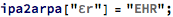


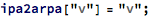


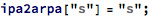


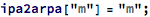


speaktext


phoneticforms

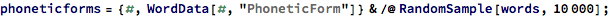


algorithm for grouping characters into phonemes
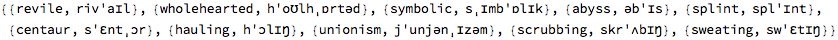


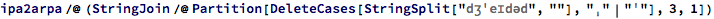


steps for grouping characters into phonemes:
start with the phonetic form of the word

break it into a list of characters (with stresses deleted)
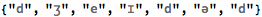
phonemes have either 1, 2, or 3 chars in them
e.g. 1 char: ʒ, 2 char: ʊr, 3 char: aʊr
so the largest phoneme is 3 chars long
so group the first 3 chars: do they form a 3-char phoneme?
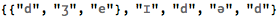

no they don’t
try to group the first 2 chars: do they form a 2-char phoneme?
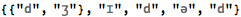

no they don’t
try the first char: is it a 1-char phoneme? (should be)


yes it is
so the first phoneme is

now look at the next 3-char group

repeat the process for this 3-char group ...


the second phoneme is

repeat the process for each 3-char group
jumping ahead 1 char for each overlapping 3-char group

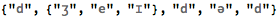

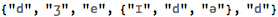

the end of the word has to be treated differently
try the 3-char phoneme

if it’s not a 3-char phoneme, try both overlapping 2-char phonemes


if the first group of 2 is not a phoneme
the first char of that group must be a phoneme


that leaves the last 2-char group in the string

if the last 2-char group was not a phoneme


then the last 2 chars must be 1-char phonemes


the algorithm can be summarized by saying:
take the largest phoneme available in each 3-char group
implement the algorithm
isPhoneme


findLargestPhoneme


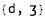


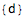


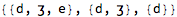

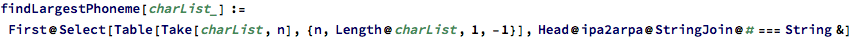

no there’s an error in the algorithm
{“e”,”ɪ”} and {“ɪ”} shouldn’t be separate phonemes
once the {“e”,”ɪ”} was found, the {“ɪ”} shouldn’t have been considered
so the algorithm needs to eliminate characters from consideration as soon as they become part of a phoneme
second shot at algorithm

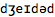

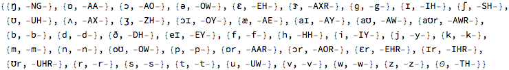


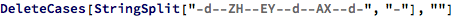
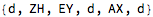
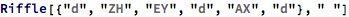


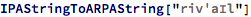


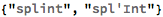